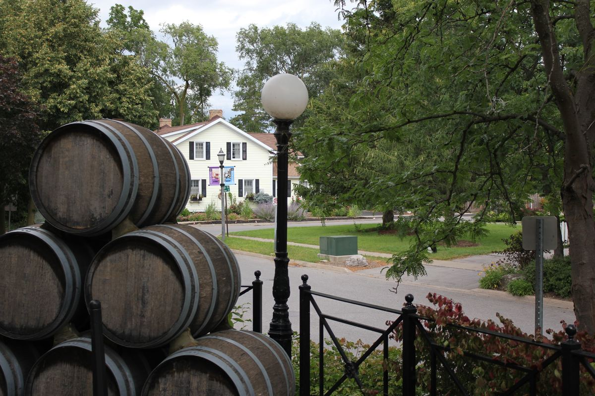

Jordan Village, Lincoln, Ontario · Photo: Laslovarga, CC BY-SA 4.0 · Credits
Operational Improvement
You suspect something isn’t working. We give you the evidence — and the roadmap.
Every organization eventually faces the same question: are we structured, staffed, and delivering services the way our community actually needs? Answering that well requires more than instinct — it requires an objective, evidence-based assessment that leadership and Council can act on with confidence.
This is the practice area where Baile Mór’s founder has the deepest track record — hundreds of engagements over more than three decades, ranging from small rural townships to some of Canada’s largest cities, universities, and police services.
Representative work
-
City of Waterloo
Led an organizational review spanning the original “2013 Forward” restructuring initiative, built around aligning the City’s structure with community needs, operational efficiency, appropriate staffing, and organizational culture.
-
Waterloo Region, Durham Region, and City of Guelph
Conducted service delivery reviews identifying opportunities for improved service delivery and cost reduction across municipal programs and operations.
What we deliver
- Current-state assessments
- Benchmarking analysis
- Stakeholder consultation summaries
- Recommendations reports
- Implementation roadmaps
- 6 weeks
- Departmental reviews
- 5 months
- Enterprise-wide assessments

Objective evidence. Practical recommendations.
A roadmap you can actually implement.